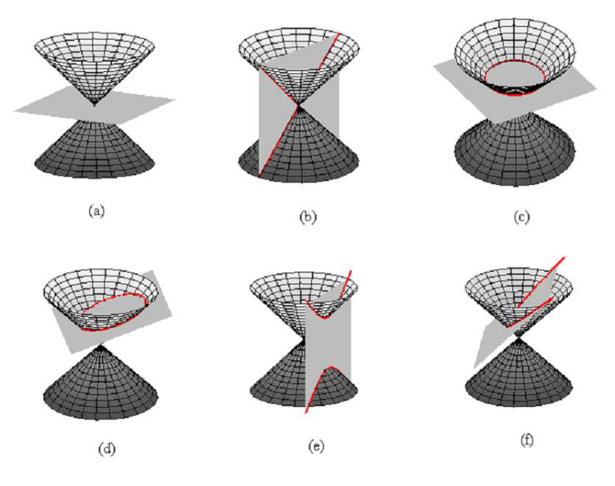
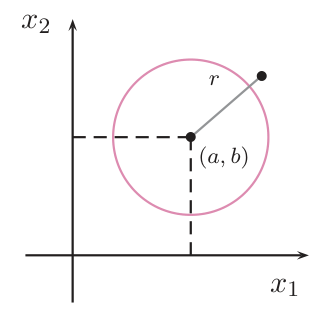
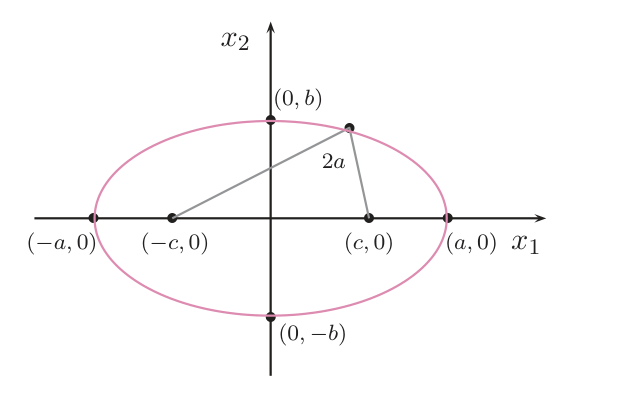
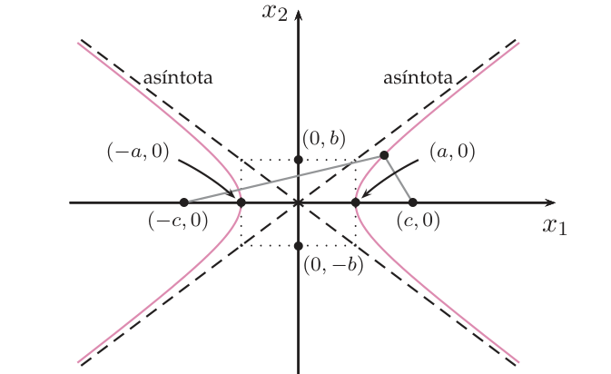
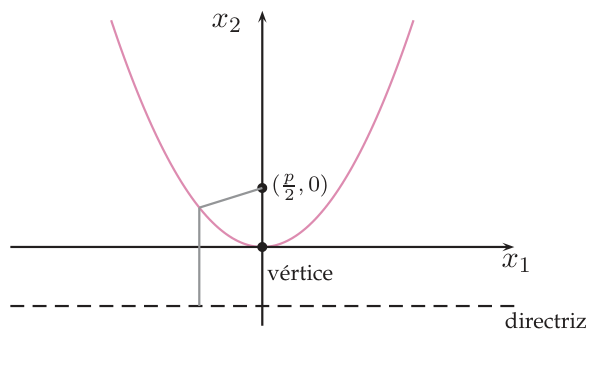
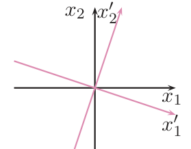
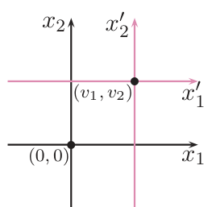
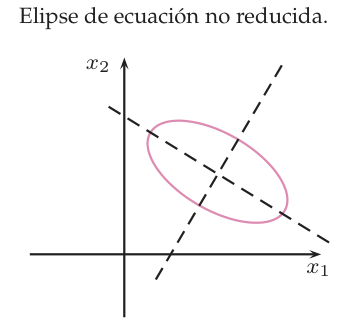
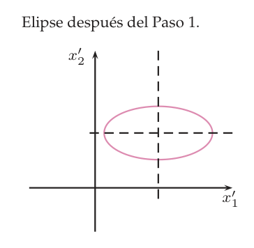
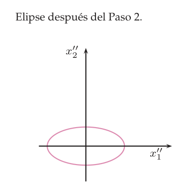

Cónicas
Te dan una ecuación de segundo grado en $x_1,x_2$, como $5x_1^2-3x_1x_2+x_2^2-3x_1+2x_2-5=0$, y hay que decir qué curva es (elipse, hipérbola, parábola o alguna degenerada) y dónde está. Aprenderás dos caminos que deben coincidir: mover los ejes (un giro que elimina $x_1x_2$ y una traslación que elimina los términos lineales, hasta la ecuación reducida) y clasificar sin dibujar, con tres números que no cambian al mover los ejes (los invariantes métricos $|A|$, $a_{11}+a_{22}$ y $A_{00}$).
0Antes de empezar U p.271
Una cónica es una curva del plano que se obtiene al cortar un cono con un plano; en coordenadas, es el conjunto de puntos que cumplen una ecuación de segundo grado. Casi siempre es un óvalo (elipse), dos ramas abiertas (hipérbola) o una «U» (parábola). Cuando la curva está torcida y desplazada, la ecuación sale enrevesada (con $x_1x_2$ y términos lineales). Es como una foto torcida y descentrada: para entenderla, primero la giras hasta que quede recta (eso elimina $x_1x_2$) y luego la centras (eso elimina los términos lineales); la ecuación que queda, la reducida, se lee de un vistazo. Y hay un atajo: tres números de la ecuación original que no cambian al girar ni trasladar (los invariantes métricos) bastan para saber de qué tipo es la curva sin dibujarla.
U p.271 propioQué necesitas saber ya
- Del tema 5.3: una matriz simétrica real $M$ se diagonaliza con una matriz ortogonal $P$ (columnas = vectores propios unitarios y perpendiculares): $P^tMP=\operatorname{diag}(\lambda_1,\lambda_2)$. Es la herramienta del giro.
- Del tema 6.2: cómo pasar de un polinomio de segundo grado a su matriz simétrica (el coeficiente del término cruzado se reparte a medias). Del tema 6.3: el signo de los valores propios decide si $\lambda_1x_1^2+\lambda_2x_2^2=c$ es una elipse ($\lambda_i$ del mismo signo) o una hipérbola (de signo opuesto).
- Del tema 4.2 y del 1.3: valores y vectores propios de una matriz $2\times2$, y determinantes $3\times3$ (Sarrus o adjuntos).
- Algo de geometría de bachillerato: completar cuadrados, y qué son una elipse (óvalo con dos focos), una hipérbola (dos ramas con dos asíntotas) y una parábola (con foco y directriz).
Mapa del tema
| Apartado | Qué contiene | Dónde |
|---|---|---|
| 1 Lugares geométricos | Def. 6.14-6.15; circunferencia, elipse, hipérbola y parábola; secciones de un cono; degeneradas | U §6.4.2, p.272-276 |
| 2 Ecuación general | Def. 6.16-6.17: $X^tAX=0$ con $X=(1,x_1,x_2)^t$; partes cuadrática, lineal y constante | U §6.4.3, p.276-279 |
| 3 Ecuación reducida | Def. 6.18; giro y traslación; Ejemplo 6.31 de U completo | U §6.4.4, p.279-284 · L p.403-405 |
| 4 Clasificación por invariantes | Def. 6.19; cuadro de U; Ej. 6.32-6.36; por qué funciona; animación 2D | U §6.4.5, p.285-288 |
| 5 Receta global | Qué método usar y en qué orden | P |
| 6 Tabla Lay ↔ U | Vocabulario y alcance | L §7.1-7.2 |
| 7 Ejercicios del libro | E 6.25–6.32 + 5 ejemplos propios | E pp.223-227 |
| 8 Ejemplos de examen | 6 ejercicios, por método | X |
| 9 Chuleta | Recetas, hipótesis, lista de comprobación, errores | — |
(a) Escribir la matriz asociada y calcular los invariantes (E 6.25 A, 6.26, 6.27 A; Feb. 2018 B, Feb. 2020 B). (b) Clasificar la cónica con el cuadro de invariantes (E 6.25 B, 6.30; Feb. 2019 B, Sept. 2017). (c) Hallar la ecuación reducida y el cambio de ejes (E 6.27 B, 6.28; Ene. 2022). (d) Cónicas con un parámetro: «¿para qué valores es degenerada / parábola / elipse real?» (E 6.29, 6.31, 6.32; Feb. 2019 A). El examen puntúa el razonamiento: di qué criterio usas, escribe la matriz y los invariantes, y comprueba las hipótesis (¿$|A|\neq0$?, ¿$A_{00}$ de qué signo?).
propio- Notación. $X=(1,x_1,x_2)^t$ y la ecuación matricial es $X^tAX=0$ (U Def. 6.17); la matriz tiene $a_{00}$ arriba a la izquierda. Los coeficientes de $x_1x_2$, $x_1$ y $x_2$ son el doble de $a_{12},a_{01},a_{02}$ (U Def. 6.16). Las coordenadas tras el giro son $x_1',x_2'$ y tras la traslación $x_1'',x_2''$ (como en U Ej. 6.31).
- Traslación (signo). U (6.4) escribe $x_i'=x_i+v_i$ y dice que se cambia el origen $(0,0)$ por $(v_1,v_2)$ (Fig. 6.9); con ese nuevo origen la relación correcta sería $x_i'=x_i-v_i$. Aquí se usa siempre $x_i''=x_i'-c_i$, con $c$ = el centro (o vértice), y se dice cuál es el nuevo origen.
- Errata de U p.280 (Def. 6.18). La línea «$x_1^2=p$ o bien $x_2^2=q$. Si $p>0$ es un par de rectas paralelas, si $p=0$ una recta doble y si $q<0$ un par de rectas imaginarias» mezcla $p$ y $q$. Debe leerse: $>0$ rectas paralelas, $=0$ recta doble, $<0$ rectas imaginarias (para $x_1^2=p$ o $x_2^2=q$ indistintamente).
- Errata de U p.286 (rectas paralelas). Para rango 2 y $A_{00}=0$ U dice «si $A_{11}>0$ imaginarias, si $A_{11}<0$ reales», pero no lo define explícitamente (la Def. 6.19 solo define $|A|$, $a_{11}+a_{22}$ y $A_{00}$; por analogía es el adjunto de $a_{11}$) y el criterio falla cuando la parte cuadrática es solo $x_1^2$: $x_1^2-1=0$ (rectas $x_1=\pm1$) y $x_1^2+1=0$ (sin puntos) tienen ambas $A_{11}=0$. Aquí se usa el criterio correcto: $A_{11}+A_{22}<0$ reales, $>0$ imaginarias, con $A_{11}=a_{00}a_{22}-a_{02}^2$ y $A_{22}=a_{00}a_{11}-a_{01}^2$ (coincide con U cuando $A_{11}\neq0$).
- Errata de la Fig. 6.6 de U (p.275). El pie y el texto dicen que el foco es $(0,\tfrac p2)$, pero la propia figura rotula el foco como «$(\tfrac p2,0)$» (y el texto de U dice «eje de abscisas» donde debe decir «de ordenadas»). Vale la ecuación: foco $(0,\tfrac p2)$ para $x_1^2=2px_2$.
- Erratas de E. E 6.25 no escribe la matriz que pide el apartado A y, en B, salta de «$A_{00}\neq0$» a «elipse real» sin decir que hace falta $A_{00}>0$. E 6.29, opción C: «$m=|\sqrt2|$» es solo $m=\sqrt2$ (la solución habla de $\pm\sqrt2$). E 6.30: ninguna de las tres opciones es correcta (es una elipse real). E 6.32: la condición de no degenerada es $a\neq0$ y $|a|\neq|b|$ (a E le falta $a\neq0$; no cambia la respuesta).
- Errata de examen. Sept. 2017 (A1), ej. 6: en el PDF falta la etiqueta «B)» de la segunda opción («Una elipse»).
1Cónicas como lugares geométricos U p.272-276
Imagina un cono doble (como dos helados de cucurucho unidos por la punta) y un plano que lo corta. Según cómo lo cortes sale una curva distinta: plano casi perpendicular al eje → un óvalo (elipse, y circunferencia si es exactamente perpendicular); plano paralelo a una generatriz → una parábola; plano más inclinado, que corta las dos hojas → una hipérbola (dos ramas). Si el plano pasa justo por la punta del cono aparecen las curvas degeneradas: un punto o un par de rectas. Por eso las cónicas se llaman también secciones cónicas. La otra forma de describirlas es por una propiedad de distancias (los «lugares geométricos»), que es la que da las ecuaciones.
U p.275-276 propio
Un lugar geométrico es el conjunto de puntos del plano que satisfacen determinadas condiciones geométricas.
U p.272- Mediatriz (el ejemplo de U): los puntos que equidistan de $A=(0,0)$ y $B=(2,0)$ cumplen $x_1^2+x_2^2=(x_1-2)^2+x_2^2\iff0=-4x_1+4\iff x_1=1$: la recta perpendicular al segmento por su punto medio. (La distancia de $(x_1,x_2)$ a $(v_1,v_2)$ es $\sqrt{(x_1-v_1)^2+(x_2-v_2)^2}$.)
- Circunferencia de centro $(0,0)$: $r^2=(x_1-0)^2+(x_2-0)^2\iff x_1^2+x_2^2+k=0$, con $k=-r^2$.
- Elipse con focos $(\pm c,0)$: $\sqrt{(x_1+c)^2+x_2^2}+\sqrt{(x_1-c)^2+x_2^2}=2a$, que «manipulada adecuadamente» (U) da $\frac{x_1^2}{a^2}+\frac{x_2^2}{b^2}=1$. Hipérbola: $\sqrt{(x_1+c)^2+x_2^2}-\sqrt{(x_1-c)^2+x_2^2}=\pm2a$, que «simplificada adecuadamente» da $\frac{x_1^2}{a^2}-\frac{x_2^2}{b^2}=1$.
- Parábola con foco $(0,\tfrac p2)$ y directriz $x_2=-\tfrac p2$: la distancia al foco, $\sqrt{x_1^2+(x_2-\frac p2)^2}$, es igual a la distancia a la directriz, $|x_2+\frac p2|$. Elevando al cuadrado: $x_1^2+(x_2-\tfrac p2)^2=(x_2+\tfrac p2)^2\iff x_1^2+x_2^2-px_2+\tfrac{p^2}4=x_2^2+px_2+\tfrac{p^2}4\iff x_1^2=2p\,x_2$.
| Cónica | Condición geométrica (U) | Ecuación (centro/vértice en el origen) |
|---|---|---|
| Circunferencia | puntos que equidistan de un punto fijo (el centro) | $x_1^2+x_2^2=r^2$ (en U: $x_1^2+x_2^2+k=0$ con $k=-r^2$) |
| Elipse | la suma de distancias a dos puntos fijos (los focos) es constante, $2a$ | $\dfrac{x_1^2}{a^2}+\dfrac{x_2^2}{b^2}=1$, focos $(\pm c,0)$ |
| Hipérbola | el valor absoluto de la diferencia de distancias a dos focos es constante, $2a$ | $\dfrac{x_1^2}{a^2}-\dfrac{x_2^2}{b^2}=1$, focos $(\pm c,0)$ |
| Parábola | puntos que equidistan de un punto fijo (el foco) y de una recta fija (la directriz) | $x_1^2=2p\,x_2$, foco $(0,\tfrac p2)$, directriz $x_2=-\tfrac p2$ |
La circunferencia es el caso particular de la elipse con $a=b$. Las elipses y las hipérbolas (no degeneradas) tienen centro (de simetría); la parábola no.
U p.272-275La cónica se llama degenerada si el plano que corta al cono pasa por su vértice. De entre las cónicas no degeneradas tienen centro: las elipses y las hipérbolas.
U p.275Con el cono geométrico, «degenerada» es «el plano pasa por el vértice» (un punto, una recta o dos rectas secantes). En la práctica (U p.286) se usa $|A|=0\iff$ degenerada, y ahí entran también las rectas paralelas (un cono con el vértice «en el infinito», es decir, un cilindro) y las curvas sin puntos reales (rectas imaginarias). Esas curvas no se ven como sección de un cono ordinario, pero son soluciones de una ecuación de segundo grado con $|A|=0$.
U p.286 propio



- Elipse ($a>b$): $c^2=a^2-b^2$. Razón: el punto $(0,b)$ está a la misma distancia de los dos focos y la suma debe ser $2a$, así que cada distancia es $a$, y por Pitágoras $b^2+c^2=a^2$. Los focos están sobre el eje mayor.
- Hipérbola: $c^2=a^2+b^2$ (se obtiene al simplificar $|d_1-d_2|=2a$ con $b^2:=c^2-a^2$; el rectángulo de lados $2a$ y $2b$, de semidiagonal $c$, es una regla mnemotécnica para dibujar las asíntotas). Las asíntotas son $x_2=\pm\dfrac ba\,x_1$ y se cortan en el centro.
- Parábola $x_1^2=2px_2$: foco $(0,\tfrac p2)$ y directriz $x_2=-\tfrac p2$; abre hacia arriba si $p>0$ y hacia abajo si $p<0$.
- Elipse $\dfrac{x_1^2}{9}+\dfrac{x_2^2}{4}=1$: $a=3$, $b=2$ ($a>b$, eje mayor horizontal), $c=\sqrt{9-4}=\sqrt5$: focos $(\pm\sqrt5,0)$. Comprobación con $(3,0)$: distancias $3-\sqrt5$ y $3+\sqrt5$, suma $6=2a$ ✓.
- Hipérbola $\dfrac{x_1^2}{1}-\dfrac{x_2^2}{3}=1$: $a=1$, $b=\sqrt3$, $c=\sqrt{1+3}=2$: focos $(\pm2,0)$; asíntotas $x_2=\pm\sqrt3\,x_1$. Comprobación con el vértice $(1,0)$: sus distancias a los focos $(2,0)$ y $(-2,0)$ son $1$ y $3$, y la diferencia es $2=2a$ ✓.
- Parábola $x_1^2=8x_2$: $2p=8$, $p=4$: foco $(0,2)$, directriz $x_2=-2$. Comprobación con $(4,2)$ ($16=16$ ✓): distancia al foco $4$, a la directriz $2-(-2)=4$ ✓.
- Confundir la diferencia con la suma de distancias: suma constante = elipse; diferencia (en valor absoluto) constante = hipérbola.
- Poner los focos en el eje equivocado. En $\frac{x_1^2}{a^2}+\frac{x_2^2}{b^2}=1$ están en $(\pm c,0)$ si $a>b$ y en $(0,\pm c)$ si $b>a$: sobre el eje del denominador mayor. En la hipérbola $\frac{x_1^2}{a^2}-\frac{x_2^2}{b^2}=1$ están en el eje del término positivo.
- Creer que $c=\sqrt{a^2+b^2}$ también para la elipse (eso es la hipérbola; en la elipse $c^2=a^2-b^2$).
2La ecuación general y su matriz asociada U p.276-279
Las ecuaciones de arriba suponen la cónica con el centro (o el vértice) en el origen y los ejes sobre los de coordenadas. En la práctica la curva está desplazada y torcida, y su ecuación es un polinomio de grado 2 completo. Lo importante es tener un formato fijo para leer los coeficientes sin equivocarse: aquí la clave es una matriz $3\times3$ simétrica $A$. El truco es poner delante un $1$: con $X=(1,x_1,x_2)^t$, el producto $X^tAX$ es un polinomio «homogéneo» de grado 2 en $(1,x_1,x_2)$ que, al multiplicar, reproduce exactamente los seis términos de la ecuación (el $1\cdot1$ da el término independiente, los $1\cdot x_i$ dan los lineales y los $x_ix_j$ los cuadráticos).
U p.277 propioUna cónica es el lugar geométrico de los puntos del plano que verifican una ecuación de segundo grado en dos variables, $$a_{11}x_1^2+2a_{12}x_1x_2+a_{22}x_2^2+2a_{01}x_1+2a_{02}x_2+a_{00}=0\qquad(6.3)$$ con $a_{ij}\in\mathbb R$ y alguno de $a_{11},a_{12},a_{22}$ no nulo (para que sea de segundo grado). Esta ecuación se llama ecuación analítica de la cónica.
U p.276La ecuación matricial asociada a (6.3) es $X^tAX=0$, con $X=(1,x_1,x_2)^t$ y $$A=\begin{pmatrix}a_{00}&a_{01}&a_{02}\\a_{01}&a_{11}&a_{12}\\a_{02}&a_{12}&a_{22}\end{pmatrix}.$$ $A$ se llama matriz asociada a la cónica y es simétrica.
Comprobación: $X^tAX=a_{00}+2a_{01}x_1+2a_{02}x_2+a_{11}x_1^2+2a_{12}x_1x_2+a_{22}x_2^2$, el polinomio de (6.3).
U p.277-278La ecuación se descompone en una parte cuadrática $f_2(x_1,x_2)=a_{11}x_1^2+2a_{12}x_1x_2+a_{22}x_2^2=(x_1\ x_2)\begin{pmatrix}a_{11}&a_{12}\\a_{12}&a_{22}\end{pmatrix}\begin{pmatrix}x_1\\x_2\end{pmatrix}$ (una forma cuadrática, tema 6.2), una parte lineal $f_1(x_1,x_2)=2a_{01}x_1+2a_{02}x_2$ (una aplicación lineal) y una parte constante $a_{00}$. Llamaremos $M=\begin{pmatrix}a_{11}&a_{12}\\a_{12}&a_{22}\end{pmatrix}$ a la matriz de la parte cuadrática: es la submatriz de $A$ que queda al quitar la primera fila y la primera columna.
U p.279| Cónica | Coeficientes |
|---|---|
| Circunferencia $x_1^2+x_2^2+k=0$ | $a_{11}=a_{22}=1$, $a_{12}=a_{01}=a_{02}=0$, $a_{00}=k$ |
| Elipse reducida | $a_{11}=\tfrac1{a^2}$, $a_{22}=\tfrac1{b^2}$, $a_{00}=-1$, resto $0$ |
| Hipérbola reducida | $a_{11}=\tfrac1{a^2}$, $a_{22}=-\tfrac1{b^2}$, $a_{00}=-1$, resto $0$ |
| Parábola $x_2^2=2px_1$ | $a_{22}=1$, $a_{01}=-p$, resto $0$ |
| Par de rectas $(x_1+n)(x_2+m)=0$; vacía $x_1^2+x_2^2=-1$ | casos degenerados que también encajan en (6.3) |
- Comparar término a término con (6.3): $a_{11}=5$; $2a_{12}=-3\Rightarrow a_{12}=-\tfrac32$; $a_{22}=1$; $2a_{01}=-3\Rightarrow a_{01}=-\tfrac32$; $2a_{02}=2\Rightarrow a_{02}=1$; $a_{00}=-5$.
- Matriz (con $a_{00}$ arriba a la izquierda): $A=\begin{pmatrix}-5&-\tfrac32&1\\-\tfrac32&5&-\tfrac32\\1&-\tfrac32&1\end{pmatrix}$ (Ej. 6.29, p.278).
- Partes (Ej. 6.30, p.279): $f_2=5x_1^2-3x_1x_2+x_2^2$, con $M=\begin{pmatrix}5&-\tfrac32\\-\tfrac32&1\end{pmatrix}$; $f_1=-3x_1+2x_2$; $a_{00}=-5$.
- No dividir entre 2 los coeficientes de $x_1x_2$, $x_1$, $x_2$: con $-3x_1x_2$ hay que poner $a_{12}=-\tfrac32$ (no $-3$); con $-3x_1$, $a_{01}=-\tfrac32$. Es el fallo más frecuente del tema.
- Poner $a_{00}$ abajo a la derecha (como en una forma cuadrática ordinaria): en esta matriz va arriba a la izquierda, y cambiarlo cambia el valor de $|A|$ y la clasificación.
- Olvidar que la matriz es de tamaño $3\times3$ para la cónica entera, pero que la parte cuadrática tiene matriz $2\times2$ ($M$): son dos matrices distintas.
3La ecuación reducida: giro y traslación U p.279-284 L p.403-405
La elipse $5x_1^2-4x_1x_2+5x_2^2=48$ está inclinada 45° (su eje mayor va en diagonal). Si giras los ejes 45° hasta alinearlos con los de la elipse, la ecuación pasa a $3y_1^2+7y_2^2=48$ (el término $x_1x_2$ desaparece) y se lee de un vistazo. Con una curva además desplazada, hay un segundo paso: moverse hasta el centro. Esos dos movimientos son un giro (que se hace con una matriz ortogonal, tema 5.2, y diagonalizando la parte cuadrática, tema 5.3) y una traslación (completar cuadrados). Lo que queda es una ecuación reducida.
L p.403-405 U p.280-282 propioCon $a,b>0$ (y $x_1,x_2$ ya las coordenadas finales):
| Ecuación reducida | $p$ o signo | Cónica |
|---|---|---|
| $\dfrac{x_1^2}{a^2}+\dfrac{x_2^2}{b^2}=p$ | $p=1$ | elipse con centro en el origen; focos $(\pm c,0)$ si $a>b$ y $(0,\pm c)$ si $b>a$; circunferencia de radio $a$ si $a=b$ |
| $p=0$ | un punto (el origen) | |
| $p=-1$ | elipse imaginaria (carece de puntos) | |
| $\dfrac{x_1^2}{a^2}-\dfrac{x_2^2}{b^2}=p$ | $p=1$ | hipérbola con centro en el origen y focos $(\pm c,0)$ |
| $p=0$ | par de rectas secantes | |
| $p=-1$ | hipérbola con centro en el origen y focos $(0,\pm c)$ | |
| $x_1^2=2p\,x_2$ ó $x_2^2=2p\,x_1$ ($p\neq0$) | parábola con vértice en el origen y foco $(0,\tfrac p2)$ ó $(\tfrac p2,0)$ | |
| $x_1^2=p$ ó $x_2^2=q$ | $>0$ / $=0$ / $<0$ | par de rectas paralelas / recta doble / par de rectas imaginarias (leer así la línea de U; ver aviso de la errata) |
- Giro. Se pasa de $(x_1,x_2)$ a $(x_1',x_2')$ con $\begin{pmatrix}x_1'\\x_2'\end{pmatrix}=P^t\begin{pmatrix}x_1\\x_2\end{pmatrix}$, es decir $\begin{pmatrix}x_1\\x_2\end{pmatrix}=P\begin{pmatrix}x_1'\\x_2'\end{pmatrix}$, con $P$ ortogonal ($P^t=P^{-1}$), tema 5.2. Para que sea un giro (y no una simetría) conviene $\det P=1$; si sale $-1$, se cambia el signo de una columna.
- Traslación. Es un cambio de origen: el nuevo origen es el punto $(c_1,c_2)$ y $x_i''=x_i'-c_i$ (ver el convenio de signo en el apartado 0).


Toda ecuación de una cónica se puede transformar, mediante un movimiento de giro y/o traslación, en su ecuación reducida. Se hace en dos pasos, siempre en este orden:
- PASO 1 (giro). Si $a_{12}\neq0$, la matriz $M$ de la parte cuadrática es simétrica y se diagonaliza ortogonalmente: $P^tMP=\operatorname{diag}(\lambda_1,\lambda_2)$ con las columnas de $P$ una base ortonormal de vectores propios. Con $x=Px'$ desaparece el término $x_1'x_2'$ y queda $\lambda_1x_1'^2+\lambda_2x_2'^2+a_1x_1'+a_2x_2'+a_{00}=0$, donde $(a_1,a_2)=2(a_{01}\ a_{02})P$. Si $a_{12}=0$ no hace falta girar: se pasa al paso 2.
- PASO 2 (traslación). Para que la cónica, si tiene centro, quede centrada en el origen, y si no lo tiene, pase por el origen (vértice en el origen). Si $(a_1,a_2)\neq(0,0)$, se completan cuadrados y se hace la traslación; si $(a_1,a_2)=(0,0)$, ya hemos terminado.



- ¿Hay $x_1x_2$? Si no ($a_{12}=0$), salta al paso 4. Si sí:
- Valores propios de $M$: $\lambda^2-(a_{11}+a_{22})\lambda+A_{00}=0$ (traza y determinante de $M$).
- Vectores propios unitarios (valores distintos ⇒ ya son ortogonales) $u_1,u_2$; $P=(u_1\ u_2)$ con $\det P=1$. Transforma también la parte lineal: $(a_1,a_2)=2(a_{01}\ a_{02})P$. La constante no cambia.
- Completa cuadrados en cada variable que tenga cuadrado y término lineal, y traslada al centro (o al vértice). Parábola: solo una variable tiene cuadrado; completa ese cuadrado y saca factor común del coeficiente de la variable lineal para absorber la constante (como en E 6.27 B).
- Lleva la ecuación a una de las formas de la Def. 6.18 y lee $a,b$ (o $p$). Escribe los cambios de variable.
- Control con invariantes: en una cónica con centro, la constante de la reducida es $|A|/A_{00}$ (apartado 4).
- ¿Hay giro? Sí: $a_{12}=-3\neq0$. La parte cuadrática tiene matriz $M=\begin{pmatrix}1&-3\\-3&-7\end{pmatrix}$.
- Valores propios. $(1-\lambda)(-7-\lambda)-9=\lambda^2+6\lambda-16=0\Rightarrow\lambda_1=-8,\ \lambda_2=2$.
- Vectores propios. $\lambda=-8$: $9x_1-3x_2=0\Rightarrow(1,3)$. $\lambda=2$: $-x_1-3x_2=0\Rightarrow(-3,1)$. Ortogonales ($1\cdot(-3)+3\cdot1=0$). Normalizando ($\|\cdot\|=\sqrt{10}$): $P=\dfrac1{\sqrt{10}}\begin{pmatrix}1&-3\\3&1\end{pmatrix}$, con $\det P=1$ y $P^tMP=\operatorname{diag}(-8,2)$.
- Parte lineal nueva: $(10\ \ 2)P=\dfrac1{\sqrt{10}}(10+6,\ -30+2)=\Big(\dfrac{16}{\sqrt{10}},\,-\dfrac{28}{\sqrt{10}}\Big)$. Ecuación tras el giro ($x=Px'$): $$-8x_1'^2+2x_2'^2+\tfrac{16}{\sqrt{10}}x_1'-\tfrac{28}{\sqrt{10}}x_2'+9=0.$$
- Paso 2 (completar cuadrados). $(a_1,a_2)\neq(0,0)$: $-8\Big[\big(x_1'-\tfrac1{\sqrt{10}}\big)^2-\tfrac1{10}\Big]+2\Big[\big(x_2'-\tfrac7{\sqrt{10}}\big)^2-\tfrac{49}{10}\Big]+9=0$. Los términos constantes suman $\tfrac{8}{10}-\tfrac{98}{10}+9=0$.
- Traslación: $x_1''=x_1'-\tfrac1{\sqrt{10}}$, $x_2''=x_2'-\tfrac7{\sqrt{10}}$. Ecuación: $-8x_1''^2+2x_2''^2=0\iff 4x_1''^2-x_2''^2=0\iff(2x_1''-x_2'')(2x_1''+x_2'')=0$.
- Lectura. Es un par de rectas secantes (degenerada). El centro está en $x'=(\tfrac1{\sqrt{10}},\tfrac7{\sqrt{10}})$, o sea, en las coordenadas originales $x=Px'=\big(\tfrac1{10}-\tfrac{21}{10},\ \tfrac3{10}+\tfrac7{10}\big)=(-2,1)$. (Comprobación: $4-6(-2)(1)-7+10(-2)+2+9$ da $4+12-7-20+2+9=0$ ✓.)
- Girar solo la parte cuadrática y olvidarse de transformar la parte lineal: $(a_{01},a_{02})$ también cambia, $(a_1,a_2)=2(a_{01}\ a_{02})P$.
- No normalizar los vectores propios: entonces $P^tMP\neq\operatorname{diag}(\lambda_1,\lambda_2)$ y la cónica se «deforma» (el cambio deja de ser un movimiento).
- Completar mal un cuadrado con coeficiente: $4x_2^2-16x_2=4\big[(x_2-2)^2-4\big]=4(x_2-2)^2-16$, no $4(x_2-2)^2-4$.
- Dar la ecuación reducida sin decir el cambio de variables: en el examen hay que indicarlo.
- Girar cuando no hay $x_1x_2$ ($a_{12}=0$): no hace falta y solo complica.
4Clasificar por invariantes métricos U p.285-288
Girar y trasladar es mover la cámara: la curva es la misma, solo cambia el sistema en que se escribe su ecuación. Hay cantidades de la ecuación que no dependen del sistema: son los invariantes métricos. Como no cambian, se pueden calcular directamente en la ecuación general, sin reducirla, y bastan para saber de qué tipo es la curva. Es como identificar un animal por su ADN en vez de fotografiarlo: da igual desde dónde lo mires.
U p.285 propioLos invariantes métricos de una cónica son los parámetros que no varían al cambiar de un sistema de coordenadas a otro mediante un giro o una traslación:
- $|A|$, el determinante de la matriz asociada a la cónica;
- $a_{11}+a_{22}$, la traza de la matriz $M$ de la parte cuadrática;
- $A_{00}=a_{11}a_{22}-a_{12}^2$, el adjunto de $a_{00}$ (igual a $|M|$).
- Con la matriz $A=\begin{pmatrix}-5&-\tfrac32&1\\-\tfrac32&5&-\tfrac32\\1&-\tfrac32&1\end{pmatrix}$ (apartado 2) y Sarrus: diagonales $(-5)(5)(1)+(-\tfrac32)(-\tfrac32)(1)+(1)(-\tfrac32)(-\tfrac32)=-25+\tfrac94+\tfrac94=-\tfrac{41}2$; antidiagonales $(1)(5)(1)+(-5)(-\tfrac32)(-\tfrac32)+(-\tfrac32)(-\tfrac32)(1)=5-\tfrac{45}4+\tfrac94=-4$. Luego $|A|=-\tfrac{41}2-(-4)=-\tfrac{33}2$.
- $a_{11}+a_{22}=5+1=6$.
- $A_{00}=5\cdot1-\big(-\tfrac32\big)^2=5-\tfrac94=\tfrac{11}4$.
Si $|A|=0$, la cónica es degenerada. Si $A_{00}\neq0$, tiene un único centro.
| $\operatorname{rang}A$ | $A_{00}$ | Dato adicional | Cónica |
|---|---|---|---|
| 3 ($|A|\neq0$) | $>0$ | $(a_{11}+a_{22})|A|<0$ | elipse real |
| $(a_{11}+a_{22})|A|>0$ | elipse imaginaria | ||
| $<0$ | hipérbola | ||
| $=0$ | parábola | ||
| 2 ($|A|=0$) | $<0$ | dos rectas secantes reales | |
| $>0$ | rectas secantes imaginarias (un solo punto real) | ||
| $=0$ | $A_{11}+A_{22}<0$ (U dice: $A_{11}<0$) | dos rectas paralelas reales | |
| $A_{11}+A_{22}>0$ (U dice: $A_{11}>0$) | dos rectas paralelas imaginarias | ||
| 1 | recta doble |
con $A_{11}=a_{00}a_{22}-a_{02}^2$ y $A_{22}=a_{00}a_{11}-a_{01}^2$ (adjuntos de $a_{11}$ y $a_{22}$ en $A$).
U p.286- Ej. 6.33 (p.287). La cónica del Ej. 6.32: $|A|=-\tfrac{33}2\neq0$ ⇒ rango 3, no degenerada; $A_{00}=\tfrac{11}4>0$ ⇒ tiene centro, tipo elipse; $(a_{11}+a_{22})|A|=6\cdot\big(-\tfrac{33}2\big)<0$ ⇒ elipse real.
- Ej. 6.34 (p.287). $x_2^2+2x_1x_2+x_1^2-2x_2+x_1+1=0$: $A=\begin{pmatrix}1&\tfrac12&-1\\\tfrac12&1&1\\-1&1&1\end{pmatrix}$, $|A|=-\tfrac94\neq0$, $A_{00}=1-1=0$ ⇒ parábola.
- Ej. 6.35 (p.287). $x_2^2-x_1x_2-2x_1+3x_2-26=0$: $A=\begin{pmatrix}-26&-1&\tfrac32\\-1&0&-\tfrac12\\\tfrac32&-\tfrac12&1\end{pmatrix}$, $|A|=7\neq0$, $A_{00}=0\cdot1-\tfrac14=-\tfrac14<0$ ⇒ hipérbola.
- Ej. 6.36 (p.287-288), con parámetro. $3\lambda x_1^2+x_2^2+2x_1x_2-4\lambda x_1+2x_2+2=0$ (aquí $\lambda$ es un parámetro, no un valor propio): $A=\begin{pmatrix}2&-2\lambda&1\\-2\lambda&3\lambda&1\\1&1&1\end{pmatrix}$. $|A|=-(4\lambda^2+\lambda+2)$, que no se anula nunca (discriminante $1-32<0$, y es siempre $<0$): rango 3 para todo $\lambda$. $A_{00}=3\lambda-1$. Casos: $\lambda=\tfrac13$ ⇒ $A_{00}=0$ ⇒ parábola; $\lambda>\tfrac13$ ⇒ $A_{00}>0$ y $(3\lambda+1)|A|<0$ ⇒ elipse real; $\lambda<\tfrac13$ ⇒ $A_{00}<0$ ⇒ hipérbola.
Tras girar y trasladar (que no cambian los invariantes), una cónica con centro queda $\lambda_1y_1^2+\lambda_2y_2^2+d=0$, con matriz $\operatorname{diag}(d,\lambda_1,\lambda_2)$. Entonces $|A|=d\lambda_1\lambda_2$, $A_{00}=\lambda_1\lambda_2$ y la traza es $\lambda_1+\lambda_2$.
- $A_{00}>0\iff\lambda_1,\lambda_2$ del mismo signo ⇒ tipo elipse. La traza tiene ese mismo signo, así que $(\lambda_1+\lambda_2)|A|$ tiene el signo de $\lambda_1\cdot d$: es $<0$ cuando $d$ tiene signo opuesto al de los $\lambda_i$, y entonces $\lambda_1y_1^2+\lambda_2y_2^2=-d$ sí tiene soluciones (elipse real). Si $d=0$, $|A|=0$: un punto.
- $A_{00}<0\iff$ signos opuestos ⇒ hipérbola ($d\neq0$) o dos rectas secantes ($d=0$).
- $A_{00}=0\Rightarrow$ un $\lambda$ es 0: $\lambda_2y_2^2+\beta y_1=0$, con matriz $\begin{pmatrix}0&\beta/2&0\\\beta/2&0&0\\0&0&\lambda_2\end{pmatrix}$ y $|A|=-\lambda_2\beta^2/4\neq0\iff\beta\neq0\iff$ parábola; si $\beta=0$ solo queda $\lambda_2y_2^2+d=0$: rectas paralelas, doble o imaginarias.
Atajo de control. Con $A_{00}\neq0$, la constante de la ecuación reducida $\lambda_1x_1''^2+\lambda_2x_2''^2+d=0$ es $d=\dfrac{|A|}{A_{00}}$ (porque $|A|=d\,A_{00}$). Sirve para comprobar una reducción.
propio L p.403-405Un giro $x=Px'$ ($P$ ortogonal, $\det P=1$) seguido de una traslación se escribe $X=NX''$ con $N=\begin{pmatrix}1&0\\ c&P\end{pmatrix}$ (por bloques), donde $c$ es el vector de la traslación (en coordenadas originales): $x=c+Px''$ da $\binom1x=\begin{pmatrix}1&0\\ c&P\end{pmatrix}\binom1{x''}$. Entonces $X^tAX=X''^t(N^tAN)X''$ y la matriz nueva es $A''=N^tAN$: $|A''|=|N|^2|A|=(\det P)^2|A|=|A|$, y su bloque cuadrático es $P^tMP=P^{-1}MP$ (la traslación no toca los términos de grado 2), semejante a $M$, luego con la misma traza y el mismo determinante $A_{00}$. (Es el cambio de base $P^tAP$ de formas cuadráticas, tema 6.2, con la matriz ampliada.)
propio(1) Escribe $A$ (dividiendo entre 2). (2) Calcula $|A|$ y decide si es 0. (3) Calcula $A_{00}$ y mira su signo. (4) Solo si $A_{00}>0$, mira el signo de $(a_{11}+a_{22})|A|$. Nunca digas «elipse real» solo porque $A_{00}>0$ (puede ser imaginaria: $x_1^2+x_2^2+1=0$), ni «parábola» solo porque $A_{00}=0$ (pueden ser rectas paralelas: $|A|$ decide).
- «$A_{00}>0\Rightarrow$ elipse real» sin mirar la traza (E 6.25 B lo omite al redactar). Con $A_{00}<0$ sería hipérbola, y el criterio de la traza solo se aplica en la rama $A_{00}>0$.
- «$A_{00}=0\Rightarrow$ parábola» sin comprobar $|A|\neq0$.
- Calcular $|A|$ con $a_{00}$ en la esquina equivocada, o sin dividir entre 2 (da otro número y otra clase).
- Distinguir rectas paralelas reales de imaginarias con solo $A_{11}$ (errata de U): puede valer 0; usa $A_{11}+A_{22}$.
- Confundir el parámetro de la ecuación (como $\lambda$ en el Ej. 6.36) con un valor propio.
5Todo junto: receta y animación propio
- Matriz: $a_{00}$ arriba a la izquierda y mitades fuera de la diagonal.
- Clasificar (rápido, sin dibujo): $|A|$, $A_{00}$, traza; cuadro del apartado 4.
- Reducir (si piden ecuación reducida, centro, ejes, focos…): giro con $M$ (solo si $a_{12}\neq0$), traslación completando cuadrados, Def. 6.18.
- Elementos: elipse $c^2=a^2-b^2$ (focos en el eje mayor); hipérbola $c^2=a^2+b^2$ y asíntotas; parábola foco y directriz. Para pasar a coordenadas originales: $x=Px'$ y sumar el centro.
- Control: con centro, la constante de la reducida es $|A|/A_{00}$; en parábola, $|A|=-\lambda\beta^2/4$, con $\beta$ el coeficiente lineal que queda tras el giro (apartado 4).
- Carga «Feb. 2018 B» y recorre los cinco pasos: la matriz y los invariantes $|A|=-\tfrac{33}2$, $A_{00}=\tfrac{11}4$; el cuadro de U da «elipse real»; el giro (los ejes verdes) elimina $x_1'x_2'$; la traslación (ejes naranjas) la centra; y al final salen los semiejes, los vértices y los focos (puntos rojos).
- Compara la constante de la reducida con $|A|/A_{00}$ en cualquier cónica con centro (paso 3).
- Carga «P5: k = 2, 1, ½, 0, −1» en orden: la misma familia $kx_1^2+x_2^2+2x_1+1=0$ pasa por elipse imaginaria, un punto, elipse real, parábola e hipérbola, según $k$ cruce $A_{00}=0$ ($k=0$) y $|A|=0$ ($k=1$).
- Carga «Paralelas reales», «Paralelas imaginarias» y «Recta doble»: tienen $|A|=0$ y $A_{00}=0$ y las separa el signo de $A_{11}+A_{22}$ (y el rango). El caso $x_1^2\mp1=0$ lo puedes escribir tú: a₁₁ = 1, a₀₀ = ∓1, resto 0.
- Orden de $\lambda$: la animación ordena $\lambda_1\ge\lambda_2$; si el libro los ordena al revés (U Ej. 6.31, E 6.27 B, E 6.32) los ejes $x_1',x_2'$ (y $x_1'',x_2''$) quedan intercambiados, pero la cónica es la misma.
- Escribe tú los coeficientes (solo enteros: con fracciones, multiplica por el denominador, como en P5) de cualquier ecuación del libro o del examen y comprueba tu resultado.
6Tabla Lay ↔ U: vocabulario y alcance L p.395-407
Lay no trata cónicas como tales (ni parábolas, ni rectas paralelas, ni los invariantes métricos de U). Solo estudia las curvas $x^tAx=c$ centradas en el origen (sin término lineal) en §7.2. Se usa aquí como apoyo para el paso del giro y para la intuición «signo de los valores propios ⇒ elipse o hipérbola». Si algo contradice a U, manda U.
| Concepto en U (este tema) | En Lay y comentario |
|---|---|
| Giro: diagonalización ortogonal de $M$ (PASO 1) | §7.1 (teorema espectral, desde p. 395) y §7.2, Teorema 4 «de los ejes principales», p. 403. Las columnas de $P$ son los «ejes principales» de la forma cuadrática: los ejes de la cónica. |
| Elipse, hipérbola, rectas, punto o vacío | §7.2, «Ejes principales desde un punto de vista geométrico», p. 403-404: $x^tAx=c$ es una elipse (o circunferencia), una hipérbola, dos rectas secantes, un punto o vacío. Figuras 2 y 3 (p. 404): la elipse $5x_1^2-4x_1x_2+5x_2^2=48$ y la hipérbola $x_1^2-8x_1x_2-5x_2^2=16$ con sus ejes principales. |
| Ejemplo: elipse inclinada | Ejemplo 5, p. 404-405: valores propios $3$ y $7$ de la matriz de $5x_1^2-4x_1x_2+5x_2^2$ y ecuación $3y_1^2+7y_2^2=48$. Sin término lineal: no hay traslación. |
| Signo de los valores propios ⇒ tipo | Teorema 5, p. 405 (definida o indefinida) y Figura 4. Ligado al signo de $A_{00}$ del apartado 4. |
| Traza y determinante en $2\times2$ | Ejercicios 23-24, p. 407: $\lambda_1+\lambda_2=a+d$ y $\lambda_1\lambda_2=\det A$. Es la lógica de los invariantes de U. |
| Parte lineal, traslación, parábolas, degeneradas e invariantes $|A|$, $A_{00}$ | No aparecen en Lay: solo en U. |
7Ejercicios del libro, resueltos E p.223-227
La sección 6.4 de E empieza en la p.222 y tiene los ejercicios 6.25 a 6.32 (pp. 223-227); el 6.33 (p.229) ya es de cuádricas (tema 6.5). Se agrupan por método. Los ejercicios 6.25 y 6.27 tienen dos apartados de métodos distintos y se reparten entre bloques (se indica con un enlace).
Bloque I — Matriz asociada, partes e invariantes (E 6.26, 6.27 A, 6.25 A)
Ejercicio 6.26 — valores propios de la parte cuadrática de $x_1^2+x_2^2+2x_1x_2-4x_1-1=0$ E p.223
Calcúlense los valores propios de la matriz de la parte cuadrática de la cónica $x_1^2+x_2^2+2x_1x_2-4x_1-1=0$.
- Separar la parte cuadrática (U p.279): son los términos de grado 2, $f_2=x_1^2+2x_1x_2+x_2^2$. Los términos $-4x_1$ (lineal) y $-1$ (constante) no intervienen.
- Su matriz: $a_{11}=1$, $a_{22}=1$ y el coeficiente de $x_1x_2$ es $2a_{12}=2$, luego $a_{12}=1$: $M=\begin{pmatrix}1&1\\1&1\end{pmatrix}$ y $f_2=(x_1\ x_2)M(x_1\ x_2)^t$.
- Polinomio característico: $|M-\lambda I|=\begin{vmatrix}1-\lambda&1\\1&1-\lambda\end{vmatrix}=(1-\lambda)^2-1=\lambda^2-2\lambda=\lambda(\lambda-2)$.
- Valores propios: $\lambda_1=0$, $\lambda_2=2$.
- Qué significa. Un valor propio nulo equivale a $A_{00}=|M|=0\cdot2=0$: la cónica no tiene centro (parábola o rectas paralelas). Aquí $|A|=-4\neq0$, así que es una parábola. Control: traza $0+2=2=a_{11}+a_{22}$ ✓.
Error típico: poner $a_{12}=2$ (el coeficiente entero) en lugar de $1$, o meter $-4x_1$ en la matriz $2\times2$.
Ejercicio 6.27, apartado A — partes cuadrática, lineal y constante de $x_1^2+x_2^2+2x_1x_2-4x_2-1=0$ E p.224
Dada la cónica $x_1^2+x_2^2+2x_1x_2-4x_2-1=0$, se pide: A) Descomponer la ecuación en parte cuadrática, parte lineal y parte constante y dar las expresiones matriciales de dichas componentes. B) Obtener la ecuación de la cónica referida a una base cuyos vectores sean paralelos a los ejes de la cónica dada. (El apartado B está en el Bloque III.)
- Parte cuadrática: $f_2=x_1^2+x_2^2+2x_1x_2=(x_1\ x_2)\begin{pmatrix}1&1\\1&1\end{pmatrix}\begin{pmatrix}x_1\\x_2\end{pmatrix}$ (la misma matriz que en el E 6.26).
- Parte lineal: $f_1=-4x_2=(0\ \ -4)\begin{pmatrix}x_1\\x_2\end{pmatrix}$. En la notación de U, $f_1=2(a_{01}\ a_{02})\binom{x_1}{x_2}$ con $a_{01}=0$ y $a_{02}=-2$.
- Parte constante: $a_{00}=-1$.
- Control con la matriz completa: $A=\begin{pmatrix}-1&0&-2\\0&1&1\\-2&1&1\end{pmatrix}$, $|A|=-4$ y $A_{00}=0$ ⇒ parábola.
Ejercicio 6.25, apartado A — ecuación matricial e invariantes de $x_1^2+4x_2^2-4x_1-16x_2+19=0$ E p.223
Si $x_1^2+4x_2^2-4x_1-16x_2+19=0$ es la ecuación de una cónica, se pide: A) Encontrar su ecuación matricial, explicar qué son los invariantes métricos y calcularlos en este caso. B) Clasificar esta cónica. (El apartado B está en el Bloque II.)
La solución de E da los invariantes pero no escribe la matriz ni la ecuación matricial que el apartado A pide: se dan aquí.
- Coeficientes (comparando con (6.3)): $a_{11}=1$, $a_{22}=4$, $2a_{12}=0\Rightarrow a_{12}=0$, $2a_{01}=-4\Rightarrow a_{01}=-2$, $2a_{02}=-16\Rightarrow a_{02}=-8$, $a_{00}=19$.
- Ecuación matricial (Def. 6.17): $$(1\ \ x_1\ \ x_2)\begin{pmatrix}19&-2&-8\\-2&1&0\\-8&0&4\end{pmatrix}\begin{pmatrix}1\\x_1\\x_2\end{pmatrix}=0.$$ Control: al multiplicar sale $19+2(-2)x_1+2(-8)x_2+x_1^2+4x_2^2$ ✓.
- Qué son los invariantes métricos (U Def. 6.19): parámetros que no varían al cambiar de sistema de coordenadas mediante un giro o una traslación. Son $|A|$, $a_{11}+a_{22}$ y $A_{00}=a_{11}a_{22}-a_{12}^2$.
- Cálculo. $|A|$ por la 3.ª columna (tiene un 0): $|A|=-8\begin{vmatrix}-2&1\\-8&0\end{vmatrix}+4\begin{vmatrix}19&-2\\-2&1\end{vmatrix}=-8(8)+4(19-4)=-64+60=-4$. Traza $=1+4=5$. $A_{00}=\begin{vmatrix}1&0\\0&4\end{vmatrix}=4$.
Error típico: no dividir entre 2 (sale $a_{01}=-4$ en vez de $-2$) o poner $a_{00}$ abajo a la derecha.
Bloque II — Clasificar por invariantes (E 6.25 B, 6.30)
Ejercicio 6.25, apartado B — clasificar $x_1^2+4x_2^2-4x_1-16x_2+19=0$ E p.223
B) Clasificar esta cónica (la del apartado A).
La solución de E pasa de «$|A|\neq0$ y $A_{00}\neq0\Rightarrow$ cónica con centro» a «$(a_{11}+a_{22})|A|<0\Rightarrow$ elipse real» sin decir que $A_{00}>0$. Es imprescindible: con $A_{00}<0$ sería una hipérbola, y el criterio de la traza solo se aplica dentro de la rama $A_{00}>0$.
- Datos del apartado A: $|A|=-4$, traza $5$, $A_{00}=4$.
- $|A|\neq0\Rightarrow\operatorname{rang}A=3\Rightarrow$ no degenerada.
- $A_{00}=4\neq0\Rightarrow$ tiene centro, y como $A_{00}>0$, es una elipse (real o imaginaria).
- $(a_{11}+a_{22})|A|=5\cdot(-4)=-20<0\Rightarrow$ elipse real. Es la del E 6.28 (centro $(2,2)$, semiejes $1$ y $\tfrac12$).
Error típico: ver solo $A_{00}>0$ y decir «elipse real» (puede ser imaginaria: $x_1^2+x_2^2+1=0$).
Ejercicio 6.30 — ¿parábola, elipse imaginaria o hipérbola? $x_1^2+4x_2^2-6x_1+8x_2+9=0$ E p.226
La cónica $x_1^2+4x_2^2-6x_1+8x_2+9=0$ es: A) Una parábola. B) Una elipse imaginaria. C) Una hipérbola.
Ninguna de las tres opciones es correcta: la cónica es una elipse real, que no figura entre las opciones. La solución de E lo reconoce implícitamente («A, B y C son falsas… se trata de una elipse real»). En un test, la respuesta sería «ninguna de las anteriores».
- Matriz: $a_{11}=1$, $a_{22}=4$, $a_{12}=0$, $a_{01}=-3$, $a_{02}=4$, $a_{00}=9$: $A=\begin{pmatrix}9&-3&4\\-3&1&0\\4&0&4\end{pmatrix}$.
- $|A|$ por la 2.ª fila: $|A|=-(-3)\begin{vmatrix}-3&4\\0&4\end{vmatrix}+1\cdot\begin{vmatrix}9&4\\4&4\end{vmatrix}=3(-12)+(36-16)=-36+20=-16$. $A_{00}=1\cdot4-0=4$.
- Clasificación: $|A|\neq0$ ⇒ no degenerada; $A_{00}=4>0$ ⇒ elipse; $(1+4)(-16)=-80<0$ ⇒ elipse real.
- Opciones: A) falsa (una parábola exige $A_{00}=0$). B) falsa (la elipse imaginaria exige $(a_{11}+a_{22})|A|>0$). C) falsa (la hipérbola exige $A_{00}<0$).
- Comprobación sin invariantes (completando cuadrados): $(x_1-3)^2-9+4(x_2+1)^2-4+9=0\iff(x_1-3)^2+4(x_2+1)^2=4\iff\dfrac{(x_1-3)^2}{4}+\dfrac{(x_2+1)^2}{1}=1$: elipse real de centro $(3,-1)$ y semiejes $2$ y $1$.
Error típico: marcar «elipse imaginaria» por ver $A_{00}>0$ sin calcular el signo de $(a_{11}+a_{22})|A|$.
Bloque III — Ecuación reducida (E 6.28, 6.27 B)
Ejercicio 6.28 — ecuación reducida de $x_1^2+4x_2^2-4x_1-16x_2+19=0$ E p.225
Si $x_1^2+4x_2^2-4x_1-16x_2+19=0$ es la ecuación de una cónica, se pide encontrar la ecuación reducida de la cónica dada.
E escribe al final «$(x_1)^2+4(x_2)^2-1=0$», reutilizando $x_i$ para las coordenadas nuevas (convención: «normalmente se expresa con las coordenadas $x_i$»). En el examen conviene decir el cambio de variables para que quede justificado.
- ¿Hace falta giro? El giro sirve para eliminar $x_1x_2$. Aquí $a_{12}=0$: los ejes de la cónica ya son paralelos a los coordenados, no hay giro y se pasa al paso 2.
- Completar cuadrados en cada variable: $x_1^2-4x_1=(x_1-2)^2-4$ (se suma y resta $(\tfrac42)^2=4$); $4x_2^2-16x_2=4(x_2^2-4x_2)=4\big[(x_2-2)^2-4\big]=4(x_2-2)^2-16$. Sustituyendo: $(x_1-2)^2-4+4(x_2-2)^2-16+19=(x_1-2)^2+4(x_2-2)^2-1=0$.
- Traslación: $x_1'=x_1-2$, $x_2'=x_2-2$ (el nuevo origen es el centro $(2,2)$).
- Ecuación reducida: $x_1'^2+4x_2'^2=1\iff\dfrac{x_1'^2}{1^2}+\dfrac{x_2'^2}{(1/2)^2}=1$: elipse (Def. 6.18 con $p=1$), $a=1$, $b=\tfrac12$.
- Elementos (propio): centro $(2,2)$; eje mayor horizontal; $c=\sqrt{1-\tfrac14}=\tfrac{\sqrt3}2$; focos $(2\pm\tfrac{\sqrt3}2,\,2)$; vértices $(1,2)$, $(3,2)$, $(2,\tfrac32)$, $(2,\tfrac52)$.
- Control con invariantes: la reducida $x_1'^2+4x_2'^2-1=0$ tiene $|A'|=\det\operatorname{diag}(-1,1,4)=-4$, traza $5$ y $A_{00}=4$: los mismos que en el E 6.25 ✓.
Error típico: completar mal un cuadrado con coeficiente: $4x_2^2-16x_2=4\big[(x_2-2)^2-4\big]$, no $4(x_2-2)^2-4$.
Ejercicio 6.27, apartado B — ecuación de $x_1^2+x_2^2+2x_1x_2-4x_2-1=0$ en una base paralela a sus ejes E p.224
B) Obtener la ecuación de la cónica referida a una base cuyos vectores sean paralelos a los ejes de la cónica dada (cónica del apartado A).
La solución de E es correcta (su $P$ y su ecuación final coinciden con las de aquí). Llama a la matriz diagonal «semejante» a la de la parte cuadrática: es cierto, porque $P$ es ortogonal ($P^tMP=P^{-1}MP$). E termina el giro; aquí se amplía hasta la reducida, que no pedía.
- Por qué diagonalizar. Los ejes de la cónica son las direcciones en que la parte cuadrática no tiene término cruzado: las direcciones propias de $M$. Como $M$ es simétrica, admite una base ortonormal de vectores propios y $P^tMP$ es diagonal.
- Valores propios (del E 6.26): $\lambda_1=0$, $\lambda_2=2$.
- Vectores propios. $\lambda=0$: $Mx=0\iff x_1+x_2=0$ ⇒ $(1,-1)$. $\lambda=2$: $(M-2I)x=0\iff-x_1+x_2=0$ ⇒ $(1,1)$. Son ortogonales ($1-1=0$). Normalizando ($\|\cdot\|=\sqrt2$): $$P=\begin{pmatrix}\tfrac1{\sqrt2}&\tfrac1{\sqrt2}\\-\tfrac1{\sqrt2}&\tfrac1{\sqrt2}\end{pmatrix},\qquad P^tMP=\begin{pmatrix}0&0\\0&2\end{pmatrix}.$$ $\det P=\tfrac12+\tfrac12=1$: es un giro.
- Cambio $x=Py$. Parte cuadrática: $0\cdot y_1^2+2y_2^2$. Parte lineal: $(0\ \ -4)P=\big(\tfrac4{\sqrt2},\,-\tfrac4{\sqrt2}\big)=(2\sqrt2,\,-2\sqrt2)$, o sea $2\sqrt2\,y_1-2\sqrt2\,y_2$. Constante $-1$ (el giro no la cambia).
- Ecuación en la base de los ejes: $\ 2y_2^2+2\sqrt2\,y_1-2\sqrt2\,y_2-1=0$.
- Ampliación (terminar la reducción). $2(y_2^2-\sqrt2\,y_2)=2\big(y_2-\tfrac{\sqrt2}2\big)^2-1$, luego $2\big(y_2-\tfrac{\sqrt2}2\big)^2+2\sqrt2\big(y_1-\tfrac1{\sqrt2}\big)=0$. Con $y_1''=y_1-\tfrac1{\sqrt2}$, $y_2''=y_2-\tfrac{\sqrt2}2$: $y_2''^2=-\sqrt2\,y_1''$, una parábola ($2p=-\sqrt2$; abre hacia $y_1$ negativo). Vértice en $y=(\tfrac1{\sqrt2},\tfrac{\sqrt2}2)$, o sea $x=Py=(1,0)$ (comprobación: $1+0+0-0-1=0$ ✓). Invariantes: $|A|=-4\neq0$, $A_{00}=0$ ✓.
Error típico: usar $P$ sin normalizar: entonces $P^tMP=\operatorname{diag}(0,4)\neq\operatorname{diag}(0,2)$ y la cónica se deforma.
Bloque IV — Cónicas con parámetro (E 6.29, 6.31, 6.32)
Ejercicio 6.29 — ¿para qué $m$ es degenerada $x_1^2+x_2^2-2x_1+2mx_1x_2-1=0$? E p.225
La cónica $x_1^2+x_2^2-2x_1+2mx_1x_2-1=0$ será degenerada si: A) $m=5$. B) $m=2$. C) $m=|\sqrt2|$.
La opción C dice literalmente «$m=|\sqrt2|$», que es solo $m=\sqrt2$ (el valor absoluto de un número positivo). La solución habla de $m=\pm\sqrt2$; probablemente se quiso escribir $|m|=\sqrt2$. En cualquier caso C es verdadera, porque $\sqrt2$ es uno de los valores que anulan $|A|$.
- Criterio (U p.286): degenerada $\iff|A|=0$.
- Matriz: $a_{11}=a_{22}=1$, $2a_{12}=2m\Rightarrow a_{12}=m$, $2a_{01}=-2\Rightarrow a_{01}=-1$, $a_{02}=0$, $a_{00}=-1$: $$A=\begin{pmatrix}-1&-1&0\\-1&1&m\\0&m&1\end{pmatrix}.$$
- Determinante completo (por la 1.ª fila): $|A|=-1\begin{vmatrix}1&m\\m&1\end{vmatrix}-(-1)\begin{vmatrix}-1&m\\0&1\end{vmatrix}+0=-(1-m^2)+(-1)=m^2-2$.
- $|A|=0\iff m=\pm\sqrt2$. Además el menor $\begin{vmatrix}-1&-1\\-1&1\end{vmatrix}=-2\neq0$ ⇒ $\operatorname{rang}A\ge2$ siempre (nunca es recta doble).
- Opciones. A) $m=5$: $|A|=23\neq0$, no degenerada: falsa. B) $m=2$: $|A|=2\neq0$: falsa. C) $m=\sqrt2$: $|A|=0$: verdadera.
- Qué degenerada es (propio). Con $m=\pm\sqrt2$: rango 2 y $A_{00}=1-m^2=-1<0$ ⇒ dos rectas reales secantes. Para $m=\sqrt2$: $\big(x_1+(\sqrt2-1)x_2+\sqrt2-1\big)\big(x_1+(\sqrt2+1)x_2-\sqrt2-1\big)=0$, que se cortan en $(-1,\sqrt2)$.
Error típico: mirar solo $A_{00}$ (que vale $1-m^2$): la degeneración la decide $|A|$, no $A_{00}$.
Ejercicio 6.31 — parábola con $1+x_1^2+2\lambda x_1x_2+\mu x_2^2+2\alpha x_2=0$ E p.226
Dada la cónica de ecuación $1+x_1^2+2\lambda x_1x_2+\mu x_2^2+2\alpha x_2=0$, se pide calcular el valor de $\alpha$ para que sea una parábola.
La respuesta es $\alpha\neq0$ (y, además, $\mu=\lambda^2$): E lo deduce correctamente.
- Condiciones de parábola (cuadro de U): $\operatorname{rang}A=3$ (es decir, $|A|\neq0$) y $A_{00}=0$. Las dos hacen falta: con $A_{00}=0$ y $|A|=0$ serían rectas paralelas.
- Matriz: $a_{00}=1$, $a_{01}=0$, $a_{02}=\alpha$, $a_{11}=1$, $a_{12}=\lambda$, $a_{22}=\mu$: $A=\begin{pmatrix}1&0&\alpha\\0&1&\lambda\\\alpha&\lambda&\mu\end{pmatrix}$.
- $|A|=1(\mu-\lambda^2)-0+\alpha(0-\alpha)=\mu-\lambda^2-\alpha^2$ y $A_{00}=\mu-\lambda^2$.
- $A_{00}=0\iff\mu=\lambda^2$. Sustituyendo, $|A|=-\alpha^2$, que es $\neq0\iff\alpha\neq0$.
- Resultado: es parábola $\iff\mu=\lambda^2$ y $\alpha\neq0$. Lo que se pide de $\alpha$: $\alpha\neq0$ (con $\mu=\lambda^2$).
- Qué pasa si $\alpha=0$ (propio). $1+(x_1+\lambda x_2)^2=0$: sin puntos reales; rango 2, $A_{00}=0$, $A_{11}+A_{22}=\lambda^2+1>0$ ⇒ par de rectas paralelas imaginarias.
Error típico: imponer solo $A_{00}=0$ (olvida que con $|A|=0$ son rectas paralelas).
Ejercicio 6.32 — elipse real con $a\,x_1^2+a\,x_2^2+2b\,x_1x_2-a=0$ E p.227
Para que la cónica de ecuación $a\,x_1^2+a\,x_2^2+2b\,x_1x_2-a=0$ represente una elipse real se debe verificar: A) $|a|=|b|$. B) $|a|>|b|$. C) $|a|\ge|b|$.
E escribe «condición para que no sea degenerada: $|a|\neq|b|$». Falta $a\neq0$: con $a=0$ y $b\neq0$ la ecuación es $2bx_1x_2=0$ (los dos ejes coordenados, degenerada). No cambia la respuesta, porque $|a|>|b|$ ya implica $a\neq0$.
- Condiciones de elipse real (cuadro de U): $|A|\neq0$, $A_{00}>0$ y $(a_{11}+a_{22})|A|<0$.
- Matriz (no hay parte lineal): $A=\begin{pmatrix}-a&0&0\\0&a&b\\0&b&a\end{pmatrix}$.
- $|A|=-a(a^2-b^2)$ (bloque diagonal) y $A_{00}=a^2-b^2$.
- $A_{00}>0\iff a^2>b^2\iff|a|>|b|$ (y esto obliga a $a\neq0$). Entonces $|A|=-a(a^2-b^2)\neq0$ ✓.
- $(a_{11}+a_{22})|A|=2a\cdot(-a)(a^2-b^2)=-2a^2(a^2-b^2)<0$ cuando $|a|>|b|$ ✓.
- Conclusión: elipse real $\iff|a|>|b|$. Respuesta B.
- Por qué A y C fallan. Si $|a|=|b|\neq0$: $b=a$ da $a\big[(x_1+x_2)^2-1\big]=0$ y $b=-a$ da $a\big[(x_1-x_2)^2-1\big]=0$: dos rectas paralelas (degenerada). A es falsa y C incluye ese caso, luego también falsa.
- Ejemplo de E ($a=2$, $b=-1$): $2x_1^2+2x_2^2-2x_1x_2-2=0$; $M=\begin{pmatrix}2&-1\\-1&2\end{pmatrix}$ con valores propios $1$ y $3$ ⇒ reducida $y_1^2+3y_2^2=2$, elipse centrada en el origen con ejes en las direcciones $(1,1)$ y $(-1,1)$. Pruébala en la animación.
Error típico: imponer solo $A_{00}>0$ y olvidar el signo de $(a_{11}+a_{22})|A|$.
Ejemplos propios (de fácil a difícil)
Propio P1 — elipse sin giro: centro, semiejes, vértices y focos de $4x_1^2+9x_2^2-8x_1+36x_2+4=0$ propio
- Invariantes: $A=\begin{pmatrix}4&-4&18\\-4&4&0\\18&0&9\end{pmatrix}$, $|A|=-1296$, $A_{00}=36>0$ y $(4+9)|A|<0$ ⇒ elipse real.
- $a_{12}=0$ ⇒ sin giro. Completar: $4(x_1^2-2x_1)=4(x_1-1)^2-4$; $9(x_2^2+4x_2)=9(x_2+2)^2-36$. Queda $4(x_1-1)^2+9(x_2+2)^2-36=0$.
- Dividiendo entre $36$: $\dfrac{(x_1-1)^2}{9}+\dfrac{(x_2+2)^2}{4}=1$. Centro $(1,-2)$, $a=3$ (horizontal), $b=2$, $c=\sqrt{9-4}=\sqrt5$.
- Vértices $(-2,-2)$, $(4,-2)$, $(1,0)$, $(1,-4)$; focos $(1\pm\sqrt5,-2)$.
- Control: $|A|/A_{00}=-1296/36=-36$ es la constante de $4x_1''^2+9x_2''^2-36=0$ ✓.
Propio P2 — hipérbola con giro: $x_1^2+4x_1x_2+x_2^2-6x_1-6x_2+3=0$ propio
- Clasificar: $A=\begin{pmatrix}3&-3&-3\\-3&1&2\\-3&2&1\end{pmatrix}$, $|A|=9\neq0$, $A_{00}=1-4=-3<0$ ⇒ hipérbola.
- Giro: $M=\begin{pmatrix}1&2\\2&1\end{pmatrix}$, $\lambda^2-2\lambda-3=0\Rightarrow\lambda_1=3,\lambda_2=-1$; $u_1=\tfrac1{\sqrt2}(1,1)$, $u_2=\tfrac1{\sqrt2}(-1,1)$; $P=\tfrac1{\sqrt2}\begin{pmatrix}1&-1\\1&1\end{pmatrix}$, $\det P=1$ (giro de 45°).
- Parte lineal: $(-6\ \ -6)P=(-6\sqrt2\ \ 0)$. Ecuación: $3x_1'^2-x_2'^2-6\sqrt2\,x_1'+3=0$.
- Traslación: $3(x_1'^2-2\sqrt2x_1')=3(x_1'-\sqrt2)^2-6$ ⇒ $3(x_1'-\sqrt2)^2-x_2'^2=3$ ⇒ $x_1''^2-\dfrac{x_2''^2}{3}=1$: hipérbola con $a=1$, $b=\sqrt3$, $c=\sqrt{1+3}=2$.
- Elementos en coordenadas originales ($x=Px'$): centro $x'=(\sqrt2,0)\Rightarrow x=(1,1)$; vértices $x'_1=\sqrt2\pm1\Rightarrow x=\big(1\pm\tfrac1{\sqrt2},1\pm\tfrac1{\sqrt2}\big)$; focos $x'_1=\sqrt2\pm2\Rightarrow x=(1\pm\sqrt2,1\pm\sqrt2)$. Asíntotas $x_2''=\pm\sqrt3\,x_1''$, que pasan por el centro $(1,1)$.
- Comprobación de la definición: en el punto $(1,1+\sqrt3)$ de la cónica, $|d_1-d_2|=\sqrt{7+2\sqrt6}-\sqrt{7-2\sqrt6}=(\sqrt6+1)-(\sqrt6-1)=2=2a$ ✓. Control: $|A|/A_{00}=-3$ ✓.
Propio P3 — parábola con giro: vértice, foco y directriz de $x_1^2+2x_1x_2+x_2^2-8x_1+8x_2=0$ propio
- Clasificar: $A=\begin{pmatrix}0&-4&4\\-4&1&1\\4&1&1\end{pmatrix}$, $|A|=-64\neq0$, $A_{00}=0$ ⇒ parábola.
- Giro: $M=\begin{pmatrix}1&1\\1&1\end{pmatrix}$, $\lambda_1=2$ con $u_1=\tfrac1{\sqrt2}(1,1)$ y $\lambda_2=0$ con $u_2=\tfrac1{\sqrt2}(-1,1)$; $P=\tfrac1{\sqrt2}\begin{pmatrix}1&-1\\1&1\end{pmatrix}$.
- Parte lineal: $(-8\ \ 8)P=(0\ \ 8\sqrt2)$. Ecuación: $2x_1'^2+8\sqrt2\,x_2'=0\iff x_1'^2=-4\sqrt2\,x_2'$. Ya es reducida (pasa por el origen): no hace falta trasladar.
- Def. 6.18 con $2p=-4\sqrt2$, $p=-2\sqrt2$: vértice $(0,0)$; foco $(0,\tfrac p2)=(0,-\sqrt2)$ en $x'$ ⇒ $x=P(0,-\sqrt2)^t=(1,-1)$; directriz $x_2'=-\tfrac p2=\sqrt2\iff\tfrac{-x_1+x_2}{\sqrt2}=\sqrt2\iff x_2-x_1=2$.
- Comprobación de la definición: $(8,0)$ está en la cónica ($64-64=0$); su distancia al foco es $\sqrt{49+1}=5\sqrt2$ y a la directriz $\tfrac{|0-8-2|}{\sqrt2}=5\sqrt2$ ✓.
Propio P4 — las degeneradas, una por una propio
- a) $x_1^2-4x_2^2-2x_1+1=0$. $A=\begin{pmatrix}1&-1&0\\-1&1&0\\0&0&-4\end{pmatrix}$, $|A|=0$, rango 2, $A_{00}=-4<0$ ⇒ rectas reales secantes: $(x_1-1)^2=4x_2^2$, o sea $(x_1-2x_2-1)(x_1+2x_2-1)=0$.
- b) $x_1^2+x_2^2-2x_1+1=0$. Rango 2, $A_{00}=1>0$ ⇒ rectas imaginarias secantes: un punto: $(x_1-1)^2+x_2^2=0\Rightarrow(1,0)$.
- c) Familia $x_1^2+2x_1x_2+x_2^2+2x_1+2x_2+k=0$, o sea $(x_1+x_2+1)^2=1-k$. $A=\begin{pmatrix}k&1&1\\1&1&1\\1&1&1\end{pmatrix}$: $|A|=0$ siempre (dos filas iguales) y $A_{00}=0$. Si $k\neq1$, rango 2 ⇒ rectas paralelas; $A_{11}+A_{22}=2(k-1)$: $k<1$ ⇒ reales ($x_1+x_2+1=\pm\sqrt{1-k}$; p. ej. $k=0$: $(x_1+x_2)(x_1+x_2+2)=0$); $k>1$ ⇒ imaginarias. Si $k=1$, rango 1 ⇒ recta doble $(x_1+x_2+1)^2=0$.
- d) Contraejemplo al criterio de U con $A_{11}$. $x_1^2-1=0$ (rectas $x_1=\pm1$) y $x_1^2+1=0$ (sin puntos) tienen ambas $A_{11}=a_{00}a_{22}-a_{02}^2=0$: el criterio del libro no decide. Pero $A_{22}=a_{00}a_{11}-a_{01}^2$ vale $-1$ y $+1$: con $A_{11}+A_{22}$ sí se distingue.
Propio P5 — clasificar para todo valor del parámetro: $kx_1^2+x_2^2+2x_1+1=0$ propio
- $A=\begin{pmatrix}1&1&0\\1&k&0\\0&0&1\end{pmatrix}$: $|A|=k-1$, $A_{00}=k$, traza $k+1$.
- Casos:
- $k>1$: $|A|>0$, $A_{00}>0$ y $(k+1)(k-1)>0$ ⇒ elipse imaginaria. Control $k=2$: $2(x_1+\tfrac12)^2+x_2^2+\tfrac12=0$, sin puntos.
- $k=1$: $|A|=0$, rango 2, $A_{00}=1>0$ ⇒ un punto: $(x_1+1)^2+x_2^2=0\Rightarrow(-1,0)$.
- $0<k<1$: $|A|<0$, $A_{00}>0$ y $(k+1)(k-1)<0$ ⇒ elipse real. Control $k=\tfrac12$: $\tfrac12(x_1+2)^2+x_2^2=1$.
- $k=0$: $|A|=-1\neq0$ y $A_{00}=0$ ⇒ parábola $x_2^2=-2x_1-1$.
- $k<0$: $|A|<0$ y $A_{00}<0$ ⇒ hipérbola.
- Moraleja: el parámetro puede cruzar tres fronteras distintas ($A_{00}=0$, $|A|=0$ y el signo de $(a_{11}+a_{22})|A|$); hay que estudiar cada una. (Recórrelo con los botones «P5» de la animación.)
8Ejemplos de examen X
De los 24 exámenes escaneados (feb. 2017 – feb. 2026 y sept. 2017–2025) hay 6 ejercicios o apartados de cónicas, en 6 exámenes distintos (Feb. 2018 B, Feb. 2019 A y B, Feb. 2020 B, Sept. 2017 A1 y Ene. 2022 A1); no hay ninguno de cuádricas. Se agrupan por método (los bloques I-IV de aquí corresponden a los de E 6.25-6.32 de arriba). Las soluciones oficiales son breves: aquí se desarrolla el razonamiento completo (el examen puntúa el proceso) y se avisa si alguna falla; las de Feb. 2019 (A y B), Feb. 2020 (B), Sept. 2017 (A1) y Ene. 2022 (A1) son correctas.
Bloque I — Invariantes: definición y cálculo
Feb. 2020 (tipo B), ejercicio 6 — definir y citar los invariantes métricos de una cónica X Feb. 2020 (B) ej. 6
Se pide definir y citar los invariantes métricos de una cónica $\mathcal C$. Nota: utilice su ecuación analítica.
- Ecuación analítica (U Def. 6.16): $a_{11}x_1^2+2a_{12}x_1x_2+a_{22}x_2^2+2a_{01}x_1+2a_{02}x_2+a_{00}=0$, con matriz asociada $A$ (Def. 6.17) y matriz de la parte cuadrática $M=\begin{pmatrix}a_{11}&a_{12}\\a_{12}&a_{22}\end{pmatrix}$.
- Definición (U Def. 6.19): son los parámetros que no varían al pasar de un sistema de coordenadas a otro mediante un giro o una traslación.
- Cuáles son: $|A|$ (determinante de la matriz de la cónica); $a_{11}+a_{22}$ (traza de $M$); $A_{00}=a_{11}a_{22}-a_{12}^2$ (adjunto de $a_{00}$ en $A$, igual al determinante de $M$).
- Ampliación (por qué lo son). Un giro $x=Px'$ ($P$ ortogonal con $\det P=1$) seguido de una traslación se escribe $X=NX''$ con $N=\begin{pmatrix}1&0\\ c&P\end{pmatrix}$ ($c$ = vector de la traslación en coordenadas originales, de modo que $x=c+Px''$; por bloques). Entonces $X^tAX=X''^t(N^tAN)X''$, así que la matriz nueva es $A''=N^tAN$, con $|A''|=|N|^2|A|=(\det P)^2|A|=|A|$; y el bloque cuadrático nuevo es $P^tMP=P^{-1}MP$ (la traslación no toca los términos de grado 2), semejante a $M$ ⇒ misma traza y mismo determinante. Además $\operatorname{rang}A''=\operatorname{rang}A$, porque $N$ es regular.
- Solución oficial: correcta (cita los tres).
Error típico: citar solo «el determinante» y olvidar la traza de $M$ y $A_{00}$, o confundir $|A|$ (matriz $3\times3$) con $|M|$.
Feb. 2018 (tipo B), problema b) — invariantes de $5x_1^2-3x_1x_2+x_2^2-3x_1+2x_2-5=0$ X Feb. 2018 (B) pb. b)
Calcular los invariantes de la cónica $5x_1^2-3x_1x_2+x_2^2-3x_1+2x_2-5=0$.
La oficial dice solo «Es el Ejemplo 6.30». Los invariantes de esa cónica están en U Ej. 6.32 (p.285), que dice «cónica del Ej. 6.30» (el 6.30, p.279, solo la descompone en partes). El resultado es correcto.
- Coeficientes: $a_{11}=5$, $2a_{12}=-3\Rightarrow a_{12}=-\tfrac32$, $a_{22}=1$, $2a_{01}=-3\Rightarrow a_{01}=-\tfrac32$, $2a_{02}=2\Rightarrow a_{02}=1$, $a_{00}=-5$.
- Matriz: $A=\begin{pmatrix}-5&-\tfrac32&1\\-\tfrac32&5&-\tfrac32\\1&-\tfrac32&1\end{pmatrix}$ (es la de U Ej. 6.29, p.278).
- $|A|$ (Sarrus): diagonales $(-5)(5)(1)+(-\tfrac32)(-\tfrac32)(1)+(1)(-\tfrac32)(-\tfrac32)=-25+\tfrac94+\tfrac94=-\tfrac{41}2$; antidiagonales $(1)(5)(1)+(-5)(-\tfrac32)(-\tfrac32)+(-\tfrac32)(-\tfrac32)(1)=5-\tfrac{45}4+\tfrac94=-4$. $|A|=-\tfrac{41}2-(-4)=-\tfrac{33}2$.
- Traza $=5+1=6$. $A_{00}$ $=5\cdot1-\tfrac94=\tfrac{11}4$. (Coincide con U Ej. 6.32, p.285.)
- Extra para «debidamente justificado» (qué cónica es): $|A|\neq0$ ⇒ rango 3; $A_{00}>0$ ⇒ tipo elipse; $(a_{11}+a_{22})|A|=6\cdot(-\tfrac{33}2)=-99<0$ ⇒ elipse real (U Ej. 6.33, p.287). Su ecuación reducida está más abajo (ampliación, Bloque III).
Error típico: no dividir entre 2 (sale $a_{01}=-3$ en vez de $-\tfrac32$) o poner $a_{00}$ abajo a la derecha.
Bloque II — Clasificar por invariantes
Feb. 2019 (tipo B), ejercicio 6 — clasificar $x_1^2+4x_2^2-6x_1+8x_2+9=0$ X Feb. 2019 (B) ej. 6
Clasificar la cónica de ecuación $x_1^2+4x_2^2-6x_1+8x_2+9=0$.
Es la cónica del E 6.30 (la solución oficial lo dice). La oficial es correcta («elipse real», con la matriz); solo tiene una errata tipográfica («uan elipse»).
- $A=\begin{pmatrix}9&-3&4\\-3&1&0\\4&0&4\end{pmatrix}$, $|A|=-16\neq0$ ⇒ rango 3, no degenerada.
- $A_{00}=4>0$ ⇒ elipse; $(a_{11}+a_{22})|A|=5(-16)<0$ ⇒ elipse real.
- Opcional (añade valor): reducida $\dfrac{x_1''^2}{4}+x_2''^2=1$ con $x_1''=x_1-3$, $x_2''=x_2+1$. Centro $(3,-1)$; $a=2$, $b=1$, $c=\sqrt{4-1}=\sqrt3$; focos $(3\pm\sqrt3,-1)$; vértices $(1,-1)$, $(5,-1)$, $(3,0)$, $(3,-2)$.
Error típico: decir «elipse» sin aclarar si es real o imaginaria.
Sept. 2017 (tipo A1), ejercicio 6 — ¿qué cónica es $x_2^2+2x_1x_2+x_1^2-2x_2+x_1+1=0$? X Sept. 2017 (A1) ej. 6
La cónica de ecuación $x_2^2+2x_1x_2+x_1^2-2x_2+x_1+1=0$ es: A) Una parábola; B) Una elipse; C) Una recta doble; D) Ninguna de las anteriores.
En el PDF del examen la segunda opción aparece sin la etiqueta «B)» («A) Una parábola; Una elipse; C)…»): errata de maquetación; se entiende que es la B. Es la cónica del Ej. 6.34 de U (p.287), que la oficial cita; la oficial («A) es cierta») es correcta.
- Coeficientes: $a_{11}=1$, $a_{22}=1$, $a_{12}=1$, $a_{01}=\tfrac12$, $a_{02}=-1$, $a_{00}=1$: $A=\begin{pmatrix}1&\tfrac12&-1\\\tfrac12&1&1\\-1&1&1\end{pmatrix}$.
- $|A|$ (Sarrus): $1\cdot1\cdot1+\tfrac12\cdot1\cdot(-1)+(-1)\cdot\tfrac12\cdot1-\big[(-1)\cdot1\cdot(-1)+1\cdot1\cdot1+1\cdot\tfrac12\cdot\tfrac12\big]=(1-\tfrac12-\tfrac12)-(1+1+\tfrac14)=-\tfrac94\neq0$ ⇒ rango 3, no degenerada (descarta C: una recta doble tiene rango 1).
- $A_{00}$ $=1\cdot1-1^2=0$ ⇒ parábola (descarta B, que exigiría $A_{00}>0$). Respuesta A.
- Comprobación por reducción (opcional): $M=\begin{pmatrix}1&1\\1&1\end{pmatrix}$, valores propios $2$ y $0$ con $u_1=\tfrac1{\sqrt2}(1,1)$, $u_2=\tfrac1{\sqrt2}(-1,1)$; $P=\tfrac1{\sqrt2}\begin{pmatrix}1&-1\\1&1\end{pmatrix}$ ($\det P=1$, giro de 45°). La ecuación queda $2y_1^2-\tfrac{\sqrt2}2y_1-\tfrac{3\sqrt2}2y_2+1=0$ y, completando, $2\big(y_1-\tfrac{\sqrt2}8\big)^2=\tfrac{3\sqrt2}2\big(y_2-\tfrac{5\sqrt2}{16}\big)$, es decir $y_1''^2=\tfrac{3\sqrt2}{4}\,y_2''$: parábola de vértice $(x_1,x_2)=(-\tfrac3{16},\tfrac7{16})$.
Error típico: concluir «parábola» con $A_{00}=0$ sin comprobar $|A|\neq0$ (podrían ser rectas paralelas).
Bloque III — Ecuación reducida
Ene. 2022 (tipo A1), problema a) — ecuación reducida de $x_1^2+4x_2^2-4x_1-16x_2+19=0$ X Ene. 2022 (A1) pb. a)
Calcular la ecuación reducida de la cónica $x_1^2+4x_2^2-4x_1-16x_2+19=0$ (2 puntos).
Es exactamente el E 6.28. La solución oficial es correcta.
- No hay término $x_1x_2$ ($a_{12}=0$) ⇒ no se necesita giro.
- Completar cuadrados: $(x_1-2)^2+4(x_2-2)^2-1=0$.
- Traslación $x_1'=x_1-2$, $x_2'=x_2-2$ ⇒ $x_1'^2+4x_2'^2=1$, elipse de centro $(2,2)$ y semiejes $1$ y $\tfrac12$.
- Comprobación por invariantes (recomendable en un problema): $|A|=-4$, $A_{00}=4>0$, $5\cdot(-4)<0$ ⇒ elipse real ✓.
Error típico: dar solo «$x_1^2+4x_2^2=1$» sin indicar que son coordenadas trasladadas.
Ampliación de Feb. 2018 (B), problema b) — ecuación reducida de $5x_1^2-3x_1x_2+x_2^2-3x_1+2x_2-5=0$ propio
(El examen solo pide los invariantes; se reduce aquí como ejemplo completo de giro + traslación con valores propios racionales.)
- Giro. $M=\begin{pmatrix}5&-\tfrac32\\-\tfrac32&1\end{pmatrix}$: $\lambda^2-6\lambda+\tfrac{11}4=0\Rightarrow\lambda=\tfrac{6\pm5}2$, o sea $\lambda_1=\tfrac{11}2$ y $\lambda_2=\tfrac12$.
- Vectores propios. $\lambda_1$: $-\tfrac12x_1-\tfrac32x_2=0\Rightarrow(3,-1)$. $\lambda_2$: $\tfrac92x_1-\tfrac32x_2=0\Rightarrow(1,3)$. $P=\tfrac1{\sqrt{10}}\begin{pmatrix}3&1\\-1&3\end{pmatrix}$, $\det P=1$.
- Parte lineal: $(-3\ \ 2)P=\big(-\tfrac{11}{\sqrt{10}}\ \ \tfrac3{\sqrt{10}}\big)$. Ecuación: $\tfrac{11}2y_1^2+\tfrac12y_2^2-\tfrac{11}{\sqrt{10}}y_1+\tfrac3{\sqrt{10}}y_2-5=0$ (con $y=x'$ las coordenadas giradas).
- Completar cuadrados: $\tfrac{11}2\big(y_1-\tfrac1{\sqrt{10}}\big)^2-\tfrac{11}{20}+\tfrac12\big(y_2+\tfrac3{\sqrt{10}}\big)^2-\tfrac9{20}-5=0\Rightarrow\tfrac{11}2y_1''^2+\tfrac12y_2''^2=6\Rightarrow\dfrac{y_1''^2}{12/11}+\dfrac{y_2''^2}{12}=1$.
- Centro $y=(\tfrac1{\sqrt{10}},-\tfrac3{\sqrt{10}})\Rightarrow x=Py=(0,-1)$. Semiejes $\sqrt{12/11}$ (en la dirección $(3,-1)$) y $2\sqrt3$ (dirección $(1,3)$); $c^2=12-\tfrac{12}{11}=\tfrac{120}{11}$.
- Control con invariantes: la reducida $\operatorname{diag}(-6,\tfrac{11}2,\tfrac12)$ da $|A'|=-6\cdot\tfrac{11}4=-\tfrac{33}2$ ✓, traza $6$ ✓ y $A_{00}=\tfrac{11}4$ ✓ (y $d=|A|/A_{00}=-6$ ✓). (Cárgalo en la animación con «Feb. 2018 B».)
Error típico: olvidar transformar la parte lineal al girar (solo se diagonaliza la cuadrática).
Bloque IV — Cónica con parámetro
Feb. 2019 (tipo A), ejercicio 6 — ¿para qué $\alpha$ es parábola $1+x_1^2+2x_1x_2+x_2^2+2\alpha x_2=0$? X Feb. 2019 (A) ej. 6
Determinar, si es posible, los valores de $\alpha\in\mathbb R$ para que la ecuación $1+x_1^2+2x_1x_2+x_2^2+2\alpha x_2=0$ defina una parábola.
Es el E 6.31 con $\lambda=\mu=1$ (ya cumple $\mu=\lambda^2$). La oficial es correcta ($\alpha\neq0$) y escribe $|A|$ como «$1-\alpha^2-1$», que es $-\alpha^2$.
- $A=\begin{pmatrix}1&0&\alpha\\0&1&1\\\alpha&1&1\end{pmatrix}$; $A_{00}=1\cdot1-1^2=0$ para todo $\alpha$ (la parte cuadrática es $(x_1+x_2)^2$).
- $|A|=1(1-1)-0+\alpha(0-\alpha)=-\alpha^2$.
- Parábola $\iff|A|\neq0\iff$ $\alpha\neq0$.
- Si $\alpha=0$: $(x_1+x_2)^2=-1$, rectas paralelas imaginarias (rango 2, $A_{11}=A_{22}=1>0$).
Error típico: responder «para todo $\alpha$» porque $A_{00}=0$ siempre, sin ver que $|A|=-\alpha^2$ se anula en $\alpha=0$.
Para practicar — fronteras con otros temas (no se desarrollan aquí)
- Cuádricas (tema 6.5, próximamente): los ejercicios de E desde el 6.33 (p.229, cono con matriz $4\times4$) son de cuádricas. En los exámenes de otros años no hay ninguno de cuádricas (Sept. 2022, ej. 6, menciona «cuádrica» solo para advertir que no se confunda con «forma cuadrática»).
- Diagonalización ortogonal (el giro): forma canónica por valores propios en 6.3 (E 6.18, Feb. 2022 A2 ej. 6) y en 5.3 (Feb. 2024 1.ª sem. P6).
9Chuleta, lista de comprobación y errores frecuentes
| Qué | Fórmula / regla | Hipótesis / aviso |
|---|---|---|
| Ecuación general | $a_{11}x_1^2+2a_{12}x_1x_2+a_{22}x_2^2+2a_{01}x_1+2a_{02}x_2+a_{00}=0$ | Alguno de $a_{11},a_{12},a_{22}\neq0$. Ojo a los «2» |
| Matriz asociada | $A=\begin{pmatrix}a_{00}&a_{01}&a_{02}\\a_{01}&a_{11}&a_{12}\\a_{02}&a_{12}&a_{22}\end{pmatrix}$, $X^tAX=0$, $X=(1,x_1,x_2)^t$ | $a_{00}$ arriba a la izquierda; $A$ simétrica |
| Partes | $f_2$ (cuadrática, matriz $M$), $f_1=2(a_{01}\ a_{02})x$, $a_{00}$ | $M$ es $2\times2$; $A$ es $3\times3$ |
| Invariantes (Def. 6.19) | $|A|$, $a_{11}+a_{22}$, $A_{00}=a_{11}a_{22}-a_{12}^2$ | No cambian por giros ni traslaciones |
| Clasificar (rango 3) | $A_{00}>0$: elipse (real si $(a_{11}+a_{22})|A|<0$); $A_{00}<0$: hipérbola; $A_{00}=0$: parábola | El criterio de la traza solo vale con $A_{00}>0$ |
| Clasificar (degeneradas) | rango 2: $A_{00}<0$ secantes reales; $A_{00}>0$ un punto; $A_{00}=0$ paralelas (reales si $A_{11}+A_{22}<0$, imaginarias si $>0$). Rango 1: recta doble | U usa solo $A_{11}$: falla en $x_1^2\mp1=0$ |
| Giro (Paso 1) | $P^tMP=\operatorname{diag}(\lambda_1,\lambda_2)$; $x=Px'$; parte lineal $2(a_{01}\ a_{02})P$ | Solo si $a_{12}\neq0$; vectores propios unitarios; $\det P=1$ |
| Traslación (Paso 2) | Completar cuadrados; $x_i''=x_i'-c_i$ | Con centro: queda en el origen; sin centro: el vértice en el origen |
| Control | Con centro: constante reducida $=|A|/A_{00}$; parábola: $|A|=-\lambda\beta^2/4$ ($\beta$ = coeficiente lineal tras el giro) | Propio (consecuencia de los invariantes) |
| Elementos | Elipse $c^2=a^2-b^2$; hipérbola $c^2=a^2+b^2$, asíntotas $x_2=\pm\tfrac bax_1$; parábola $x_1^2=2px_2$: foco $(0,\tfrac p2)$, directriz $x_2=-\tfrac p2$ | Focos sobre el eje mayor (elipse) o transverso (hipérbola) |
- Explicar cada cónica como lugar geométrico y como sección de un cono (U Def. 6.14-6.15; Fig. 6.7).
- Escribir la matriz asociada de una ecuación (con $a_{00}$ arriba y mitades) y la descomposición en tres partes (E 6.25 A, 6.26, 6.27 A; U Ej. 6.29-6.30).
- Calcular los invariantes $|A|$, $a_{11}+a_{22}$, $A_{00}$ (E 6.25 A; U Ej. 6.32; X Feb. 2018 B, Feb. 2020 B).
- Clasificar con el cuadro, incluidas las degeneradas, sin confundir real con imaginaria (E 6.25 B, 6.30; U Ej. 6.33-6.35; X Feb. 2019 B, Sept. 2017).
- Hallar la ecuación reducida: giro con vectores propios unitarios y traslación por completar cuadrados (E 6.27 B, 6.28; U Ej. 6.31; X Ene. 2022).
- Dar centro, ejes, vértices, focos, asíntotas y directriz, y pasarlos a coordenadas originales (P1-P3).
- Estudiar una cónica con parámetro: degenerada, parábola, elipse real (E 6.29, 6.31, 6.32; U Ej. 6.36; X Feb. 2019 A; P5).
- Detectar las erratas de U (Def. 6.18, p.286, Fig. 6.6, signo de (6.4)), de E (6.25, 6.29, 6.30, 6.32) y del examen Sept. 2017.
- No dividir entre 2 los coeficientes de $x_1x_2$, $x_1$ y $x_2$ al armar $A$ (E 6.25 A, 6.26).
- $a_{00}$ en la posición equivocada: va arriba a la izquierda.
- «$A_{00}>0\Rightarrow$ elipse real» sin comprobar el signo de $(a_{11}+a_{22})|A|$ (E 6.25 B lo omite).
- «$A_{00}=0\Rightarrow$ parábola» sin $|A|\neq0$ (E 6.31, Feb. 2019 A; pueden ser rectas paralelas).
- Distinguir rectas paralelas reales de imaginarias con solo $A_{11}$ (errata de U): usa $A_{11}+A_{22}$.
- Vectores propios sin normalizar o $\det P=-1$ sin avisar; girar solo la parte cuadrática (olvidar la lineal).
- Completar mal un cuadrado con coeficiente ($4x_2^2-16x_2=4[(x_2-2)^2-4]$).
- Dar la reducida sin decir el cambio de variables ni el nuevo origen.
- Poner los focos en el eje equivocado o mezclar $c^2=a^2-b^2$ (elipse) con $c^2=a^2+b^2$ (hipérbola).
- Fiarse de E 6.30 como test normal: no tiene opción correcta; y olvidar exigir también $\mu=\lambda^2$ en E 6.31 (con $\alpha\neq0$).